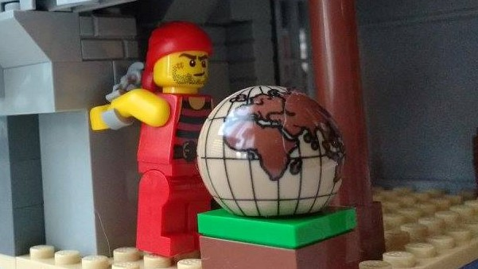
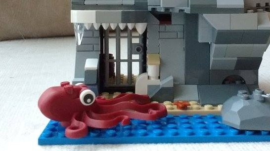
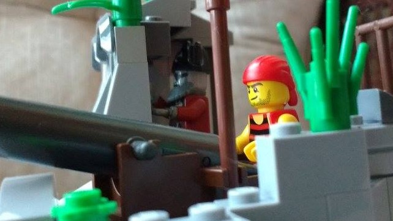

Skull Rock
Monsters on the Beach
Monday, April 17, 1617 St. John’s, Newfoundland
"Come on, Alice! Don’t be a baby!"
"Isaac, I am not a baby, and you know it; I’m 6, and I’m 16 minutes older than you! We should not be in these woods alone. There could be wolves, or Beothuk, or French, or Portuguese, or anything. Who knows what could be around here? What if we get lost?"
"The scariest thing I’ve seen are foxes. And we can’t get lost, we’re following this river. Stop worrying. Come on, you have to see this, it’s really weird. There’s a sea monster on the beach and there are flowers in the rocks along the river."
Following the river this time of year is dangerous for the young twins. The water is deep and fast with spring runoff. The woods are a dense tangle of small coniferous and deciduous trees. And the ground is wet and still icy or snowy in places. It is difficult to stay dry, which matters because the overnight temperatures are still below freezing (-2 ℃), and the daily high is only around 5 ℃. There is a rough trail through the woods, Europeans have been visiting the island to fish cod for just over 100 years now, and this particular river leads to a beach where the capelin roll in June. The capelin make good food, bait, and fertilizer.
Part way along, Isaac stops to show Alice the strange flowers embedded in the riverbank: 500 million year old fossilized trilobites a bit bigger than their hands.
Further along, the river terminates on a pebble covered beach. Looking out to sea the children can see icebergs.
"The monster is over here!"
Isaac grabs Alice’s hand and runs up the beach towards a steep cliff jutting out into the ocean. There, well in from the water, at the base of the cliff, is the gigantic skeleton of a blue whale approximately 25 meters long.
"Isaac, that’s not a monster. That’s a whale skeleton! You were just trying to scare me."
"It’s still cool; look how big it is!"
As the kids examine the skeleton, playing and climbing amongst the ribs, a thick fog sneaks up the beach, in from the sea behind them, coming in like the surf. When it withdraws, it reveals 4 men, pirates, standing in a ring around the children.
"So ye like sea monsters do ye? Let’s see how ye take to the cap’n! He’ll teach ye a thing or two about sea monsters." The other men snort at the inside joke. Alice and Isaac are scooped up and the fog returns to carry them off.
The New Found Land
It is early Monday morning, the first of May, 1617, about 5 o’clock, the sun will be up in a half hour. You expect it will be overcast today, and a bit chilly, about 2C. But who can tell in this morning fog? The ice has been heavy this year, which makes the air cold when the wind is off the water.
You walk your way down to St. John’s Harbour. Past the rooms, past the flakes where the cod will be dried, and past the stages where it will be landed and split. It was hard work getting all this repaired after it being at the mercy of the elements all winter, not to mention the bits that had been damaged or stolen by rival fleets, it took a little over a month this year. Life is easier back home in Bristol, England, but this is where the honest work is.
If you wanted dishonest work you could easily take up with a pirate crew, there are plenty around. 13 years ago the newly minted King James ended the almost 20-year-old Anglo-Spanish war. A good thing, but it put a very large navy suddenly out of business. A man’s gotta eat, and if your expertise is fighting the Spanish at sea, well… turning pirate makes a certain sense. Thankfully, the pirates tend to congregate far from here on the northern shores of Africa, but you occasionally hear of pirates nearby. Just a few years ago there were pirates just up the coast in Harbour Grace. They sometimes come to Newfoundland to recruit and victual their ships.
You nod to the other men, doing the same as you as you prepare for your daily commute. Now everyone will row out through the St. John’s Narrows rush hour traffic to the inshore fishing grounds. Thankfully you do not have very far to go, around here the cod is so plentiful that it has been said, “the cod shoals are so thick you can hardly row a boat through them.” A hundred years ago Cabot reportedly said you could catch ‘em with a basket! These days you use a jigger, hooking them one-by-one and pulling them up over the side until the boat is full. Then you row back in to clean and salt. Then it is almost straight to bed to do the same thing tomorrow.
Usually the fog burns off once the sun is up, but no such fortune today. You’re used to fog, but it can still be kind of creepy. It is a new world afterall. Men such as Whitbourne have claimed to have seen creatures akin to mermaids. And there is always witches. 10 witches were hanged in Pendle Hill back home just 5 years ago. And the King himself was nearly killed at sea by a witch-made storm just after his wedding almost 30 years ago.
The gloom of the fog is an extra burden today too. Yesterday, at church, there was a heartbreaking burial for two young stowaways. Twins, Alice and Isaac, just 6-years-old. They came across in February on the same ship you did. How they stayed hidden and fed on such a small ship boggles the mind, but they were not discovered until 2 weeks in. By that time the captain was not willing to turn back because delay would have meant added expense, and a late arrival which would have meant not getting the best landing spots. In spite of their young age they were thriving and even helping until 3 weeks ago when they went missing. Finally, you were forced to conclude that they met some ill fate and were declared dead, and a memorial was held, yesterday.
Your boat is full. You haul anchor and set to rowing back to the harbour, there are still many hours of work yet. As you approach the mouth of The Narrows, the fog gets thicker, until you can longer see land. No bother, you’ll row through it. Sure enough, a few moments later you row through and you can see land again. But there is something else! Standing on a rock, perhaps some 50 meters away, the glowing apparition of a beautiful curly red haired pale skinned woman dressed in green and white gossamer. You look around, surely someone else sees her too, but there is no one. Motionless, she watches you intently.
You encounter the pirate.

You are rescued by Alice and Isaac.

Kill the demon octopus with a giant anchor.

The Captain's Past
You touch the phylactery and experience something like a dream.
You are 7 years old. You have borrowed a dinghy that you were told not to touch. You are rowing out to Picnic Island to go berry picking. No one is going to be cross for long when you present pails full of blueberries, raspberries, and partridge berries. You rounded the point a few minutes ago and now rowing is harder than you anticipated. The wind has come up suddenly and the lop on the water has grown menacing white caps. The dinghy capsizes and you fall into the water. You can’t swim, you never learned, no one around here ever learns to swim. That strikes you as strange for the first time ever. You are drifting down. There is so much kelp. No one ever eats kelp; that strikes you as strange too. The kelp reaches up and grabs your ankles; it grabs your wrists; it gets tighter. Kelp is slithering around your neck and mouth. In the distance you see two sharp points of light. They are getting closer; they are the eyes of a figure. A gleeful figure, with evil intent. You muffle a scream through your kelp covered mouth. Suddenly there is a bright light from above you. Next you are washed up on the beach where you started, the dinghy is there too, dry, seemingly untouched, but you are soaked, your head hurts, and there are bruises on your wrists and ankles.
You are 24 years old. You are captain of the merchant schooner, "Malakoff". (Cape Agulhas) Life is grand. You’ve got a full load food stuffs, the weather is fine, and you are making good time. You nod to the mate, your cousin, who you have been sailing with for years now. It is nice to have family around.
You have been overseeing the offloading of the cargo and making preparations for your next load. You are looking forward to some rest in your bunk. You open your cabin door to find a stranger seated at your desk. He invites you in, to your own room, on your own ship! He motions for you to sit on your bunk and hands you a letter. It is a lettre de marque from the Queen. Except, not quite, it asks you to serve as an undercover privateer. The Queen cannot offer you the normal protection of a privateer, you must behave as though a pirate. The mysterious guest takes back the letter, salutes you, bows, and leaves. You breath deep, how do you start? It will have to wait until after your nap. You lie down and eventually slip unconscious.
Nightmares
You put the beautiful, but frightening, apparition out of your mind, and pumping your oars all the harder you hasten back to your stage. You spend the next several hours unloading, splitting, and salting your fish.
That night you do not sleep well. You have many nightmares about a monstrous pirate. Not simply a mean pirate, but some sort of literal monster pirate captain seemingly from Hell. He seemed to be recruiting crew, corrupting them with enticements to commit unspeakable deadly sins, and rejoicing in their eventual deaths. His head was that of a bleached skull with perpetual flames burning in his eye sockets. You also dream of young Alice and Isaac. You see them cowering in a cold damp dark place. Through it all, you hear a woman pleading, “Help them.”
In the morning, by the time you trudge down to your boat, the sun is already up although the weather is the same as yesterday so it is hard to tell, and all the fishermen are already out through The Narrows.
You untie the painter line and turn to sit down and begin your commute. Sitting in the back of the boat is the woman from yesterday. She motions for you to sit and begin rowing, which you do. She sits silently as you row out the harbour. You are equally quiet, and as you row, despite your trepidation, you regard her carefully. As you row she is visited by a regular stream of gulls, swallows, and robins who land on the gunnel and accept her touch.
"Who are you?"
"Be not afraid, I am a friend. You and others are in danger; I can help you. You must wear this. Please." She holds out her hand to reveal a necklace of alternating pearls and small pieces of blue-tinted shell.
"I heard your voice, last night, in my nightmares. Are the children still alive? Is the monster pirate real?"
"You can save them; you can save them all." She leans forward and clasps the necklace around your neck. At that moment a cold thick fog envelopes you and when it thins, she is gone. But the necklace is still there.
There is nothing else to do but continue rowing out to your spot. Once you get there you set to work. However, after several hours your poor sleep catches up to you and you lie down to nap.
You are awoken by the sound of men shouting. When you open your eyes you are surprised to see a sailing ship bearing down on you.
Sheila NaGeira's Necklace
You decide to row over for a closer look. There cannot really be a spirit standing there!
As you begin to approach she lifts her hands to the back of her neck and unclasps a necklace. It is worthy of a princess’s treasure, alternating pearls and small pieces of blue-tinted shell. She says, “You must wear this; you need it to save the children. You must wear it.” and tosses it into your boat. You watch it arc through the air and land among the cod in the bottom of your boat. When you look up again, to ask her to explain herself, she is gone.
You pick up the necklace; it is certainly real. But you are no fool, you will not be tricked by some unnatural sea witch. Such necklaces are probably exactly how they get power over you. You throw the necklace over the side.
You free the pirate from his curse.
The sea witch tempts you away.
Fight a thrall and get captured.
Return to the ordinary world with the missing children.
The End
Your family and community suffers.
The End
The pirate kills you.
The End
You take the pirate's place in the curse.
The End

The demon octopus turns you into a thrall.
The End
You destroy the pirate, consigning him to the sea witch.
The End